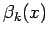
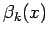
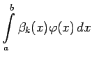
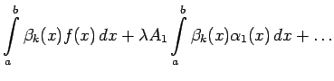
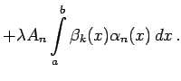
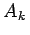
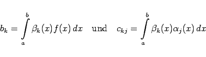
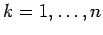

Inhalt Index DeskTop Bronstein

 Lineare Integralgleichungen Fredholmsche Integralgleichungen 2. Art Integralgleichungen mit ausgearteten Kernen
Lineare Integralgleichungen Fredholmsche Integralgleichungen 2. Art Integralgleichungen mit ausgearteten Kernen


Die Koeffizienten  können auf folgende Weise bestimmt werden. Die Gleichung (11.6c) wird mit  multipliziert und anschließend bezüglich x in den Grenzen von a bis b integriert:
können auf folgende Weise bestimmt werden. Die Gleichung (11.6c) wird mit  multipliziert und anschließend bezüglich x in den Grenzen von a bis b integriert:
|  | = |  | |
|  | (11.7a) |
Die linke Seite dieser Gleichung ist nach (11.6b) gleich . Mit den Abkürzungen
|  | (11.7b) |
erhält man für :
Es ist möglich, daß die Integrale nicht exakt ausgewertet werden können. In diesem Fall muß man zur numerischen Integration mit Hilfe einer Näherungsformel übergehen. Das lineare Gleichungssystem (11.7c) besteht aus n Gleichungen für die Unbekannten  :
: